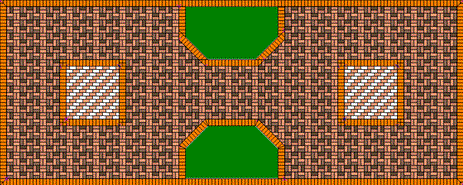

Paving Design Expert 2.2
|
Designer for the paving tiles and parquets

With paving of sidewalk tile and blocks besides the qualitative performance of works it is necessary to develop such project of paving, which will appear most aesthetically and it will be entered in the general design of the surrounding space. In this case it is necessary to consider both the wishes of customer and limitations, which escape from the technical characteristics of the selected tile. In the general case with the design of paving sidewalk tile it is necessary to consider these conditions:
It is obvious that the composition of paper sketch or drawing of a similar project of paving sidewalk tile will be very labor-consuming process. But its correction with the purpose to try pave with the diverse variants of block paving becomes the task, impracticable practically. It is also obvious that the automation of the design of paving sidewalk tile will significantly reduce the time of the development of design and gives the possibility to compose several alternative designs and selection of them of the best. Moreover, draft can be drawn up in the presence of customer with his direct participation. We represent the program "designer of sidewalk tile", which fulfills all enumerated functions. It is in more detail... New in program
|